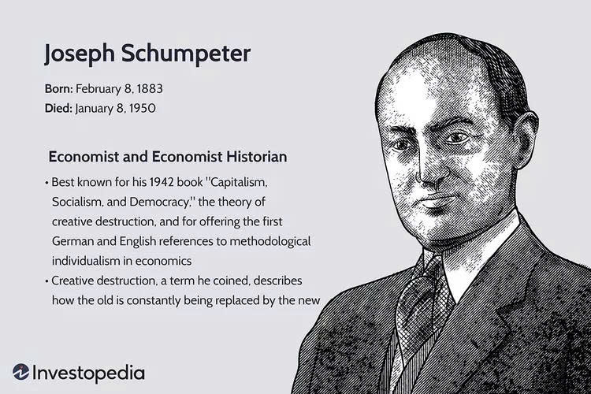
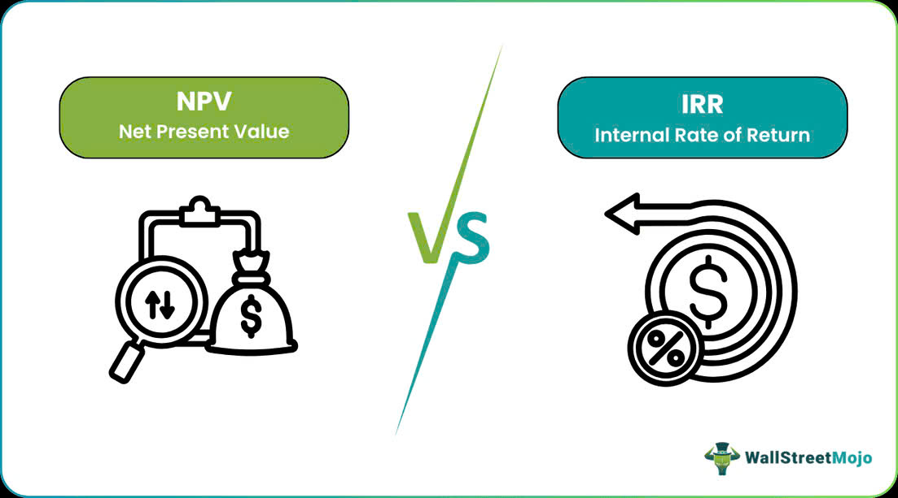

Why We Buy What We Buy: Introduction to Consumer Rationality and Heuristics – An Expanded Behavioral Analysis
8:03:14 PM | 2/3/2025
Traditional economics built its models on the cornerstone assumption of
Consumer Rationality—the concept of Homo Economicus who is perfectly informed,
possesses stable preferences, and always makes choices that maximize personal utility.
However, the groundbreaking work of behavioral economists, particularly Daniel Kahneman
and Amos Tversky, has demonstrated that human decision-making operates under significant
cognitive constraints. Behavioral Economics bridges the gap, revealing that our
purchasing decisions are frequently driven by predictable mental shortcuts
(heuristics) and systematic errors (biases). Understanding this profound
psychological layer is now essential for strategic analysis, market forecasting,
and effective policy design.

Absolute vs. Comparative Advantage: Why Nations Specialize and Trade
8:02:44 PM | 25/2/2025
The foundation of international trade lies not in competition where one nation wins and another loses, but in mutual gains derived from specialization. Two core concepts, Absolute Advantage and Comparative Advantage, explain precisely why countries—and even individuals or businesses—benefit from focusing on what they do best and trading for the rest. Understanding these concepts is essential to grasp the economic benefits of globalization, efficiency, and the long-term allocation of resources.

Understanding Credit, Debt, and Interest Rates: The Cost of Future Consumption – An Advanced Look
8:01:14 PM | 23/12/2024
For individuals, businesses, and even entire governments, the ability to spend money they don't yet possess is a powerful economic tool. This concept is formalized through credit and debt, the fundamental mechanisms that fuel consumption and investment today using resources earned tomorrow. However, this power comes with a price tag—the interest rate—which represents the true, compounding cost of pulling future consumption into the present. A clear, detailed understanding of these three concepts is essential for sound personal finance and fundamental economic literacy.

Assessing Systemic Risk and Managing Uncertainty in Long-Term Investment Portfolios
8:05:54 PM | 22/11/2024
For the sophisticated investor, the traditional risk-reward models, which focus on idiosyncratic (firm-specific) risk, are insufficient. The true threats to long-term capital preservation and growth often originate from Systemic Risk—the risk of collapse of an entire financial system or market, triggered by events that impact all participants. Coupled with the inherent Uncertainty over long time horizons, managing these macro-level threats is the defining challenge of strategic portfolio management. The primary goal shifts from maximizing returns to maximizing the probability of survival during extreme, high-impact events.

Schumpeter's Theory of Creative Destruction: The Role of Innovation in Economic Cycles
8:00:04 PM | 12/11/2024
For classical economists, economic growth is viewed as a smooth, incremental process. However, the Austrian economist Joseph Schumpeter offered a radically different and far more dynamic view: economic progress is not merely additive, but is driven by discontinuous, revolutionary change. His central concept, Creative Destruction, explains the essential process of capitalism—an evolutionary gale that simultaneously destroys old industries and creates new ones, underpinning the long-term capitalist boom-and-bust cycle. Understanding this theory is paramount for strategic investors seeking to identify the sources of fundamental disruption and long-term value creation.

The J-Curve Effect: A Comprehensive Analysis of Currency Devaluation and Trade Balance Dynamics
8:02:44 PM | 2/11/2024
For governments wrestling with chronic trade deficits, the strategic decision to devalue the domestic currency is often seen as a powerful tool to restore balance. The theoretical expectation is straightforward: cheaper exports and costlier imports should immediately improve the trade balance. Yet, the empirical evidence consistently shows an initial counterintuitive deterioration before the expected improvement materializes—a phenomenon known as the J-Curve Effect. A sophisticated understanding of this dynamic is crucial for international investors and policymakers to manage expectations and ensure policy success.

Monetary vs. Fiscal Policy: A Deep Dive into Central Bank and Government Actions and Their Impact on the Stock Market
8:05:20 PM | 23/10/2024
For strategic investors, the performance of the stock market is not solely driven by corporate earnings but is profoundly influenced by two powerful macro-levers: Monetary Policy, controlled by the Central Bank, and Fiscal Policy, controlled by the Government. These two policy tools act as the primary mechanisms for stabilizing the business cycle, but their differing goals and methods create distinct, often complex, impacts on asset valuation and sector performance. Understanding the interplay between these two forces is critical for long-term portfolio positioning.

Market Segmentation and Targeting: Keys to Effective Audience Reach
8:01:05 PM | 13/10/2024
In today’s hyper-competitive and saturated marketplace, the notion of marketing a product to "everyone" is a recipe for strategic failure. Effective market strategy demands precision. The powerful combination of Market Segmentation and Targeting provides the essential framework for businesses to move beyond generic marketing and connect directly with the specific groups of consumers most likely to value and purchase their offering, thereby maximizing marketing efficiency and return on investment (ROI).

Monopoly vs. Perfect Competition: Where Should Your Business Strategically Position Itself? A Deep Dive into Market Structures
8:02:04 PM | 3/10/2024
For strategic leaders, understanding the structure of the market they compete in is paramount to setting pricing, production, and long-term investment strategies. At opposite ends of the economic spectrum lie two foundational models: Perfect Competition and Monopoly. While few real-world markets perfectly align with either model, these frameworks provide the necessary tools to assess an industry's profitability potential and to determine the optimal strategic positioning for any firm. The fundamental goal of corporate strategy is often to escape the harsh realities of competition and acquire a degree of market power.

Understanding IRR and NPV: Precise Tools for Project Investment Decisions
8:10:43 PM | 23/9/2024
For corporate finance managers and strategic investors, the decision to commit substantial capital to a project—be it launching a new product line, acquiring machinery, or entering a new market—is fraught with risk. Success hinges not just on forecasting revenues, but on accurately determining if the project will generate sufficient value to justify its cost. Two fundamental metrics, Net Present Value (NPV) and Internal Rate of Return (IRR), stand as the indispensable bedrock for making these critical capital budgeting decisions.